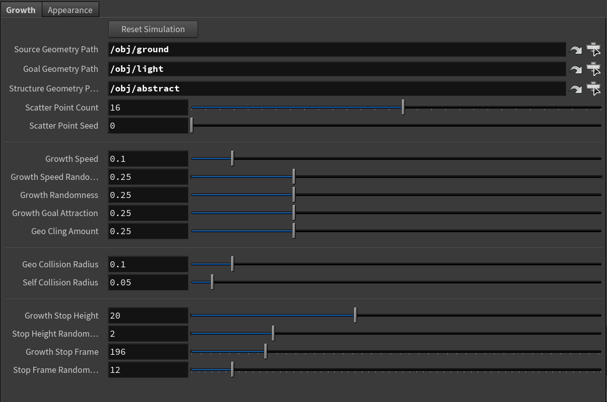
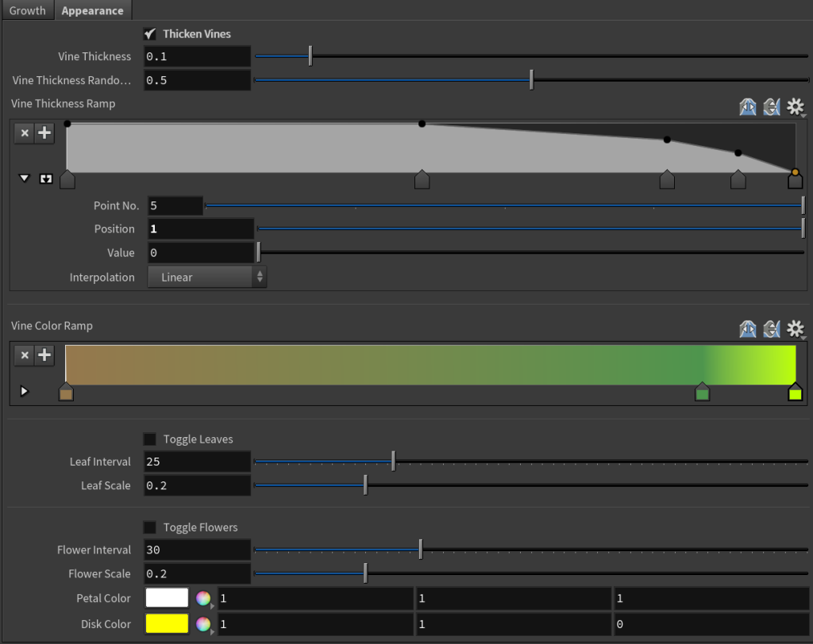

Updated Jan. 19, 2021
Download the OpenHDA for Houdini here: Pay what you want on Gumroad


After working on several projects involving Boids using Craig Reynolds three rules of interaction, I had an idea to simulate vine growth using similar principles. A big challenge here was the idea that the vines would need to “cling” to surfaces, and should not be able to fly around like boids; rather, they would need to find something to attach themselves to.


Like in previous projects, I used Houdini and VEX to simulate the behavior of the vines. On each frame, they choose a direction based a number of conditions, such as where their goal (the light) is, whether they are close enough, or too close, to a piece of geometry or each other, and a little sprinkling of randomness. The user has control over how strongly each of these conditions factor in. As their final step, they move forward based on the calculated direction and their movement speed (unless they have reached a stop condition).

Another thing I wanted to do was add leaves that would sprout from the vines, but only when the vine was at an appropriate angle (not growing flat on the ground or hanging from something at too steep an angle). This required measuring the normal vector to the surface nearest the vine, and ruling out all the points on the vine that didn't measure up.

Finally, I also wanted the leaves to start as tiny sprouts and grow along with the vine, which also needed thicken as it grew older. To achieve these effects, I introduced a counter on the vine points that would track how old they were, allowing for dynamic scaling and coloring based on age. Of course, this is all up to the user as well. I also decided to add flowers using the same system.


© 2025 Noah Gunther